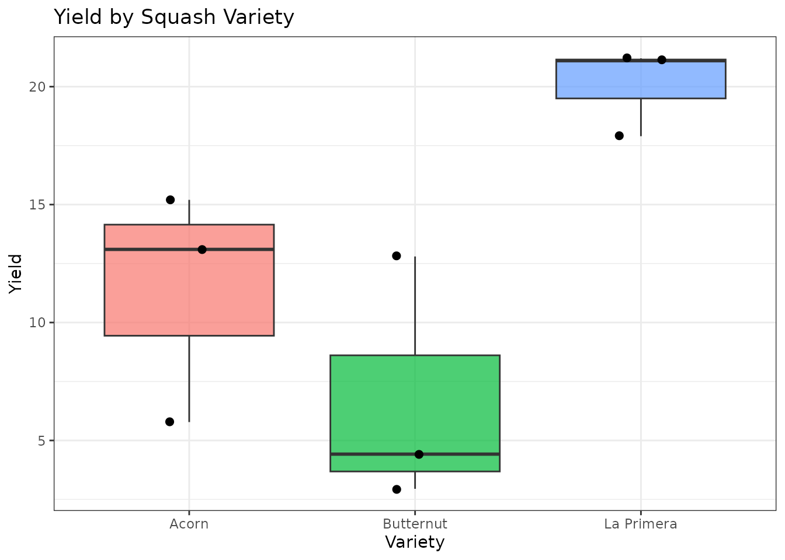
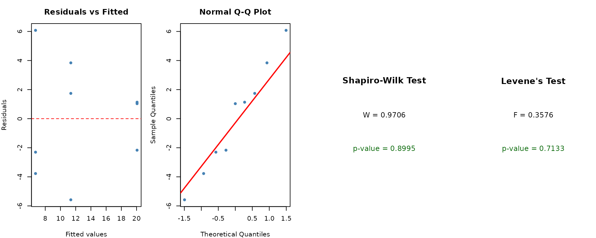
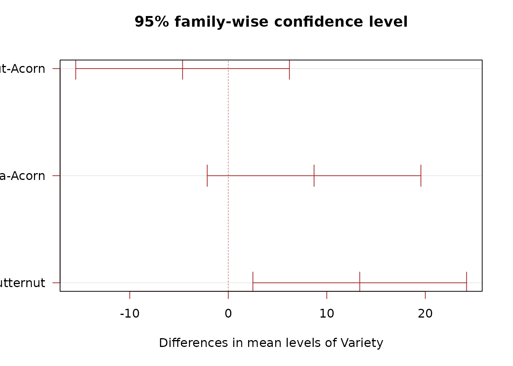
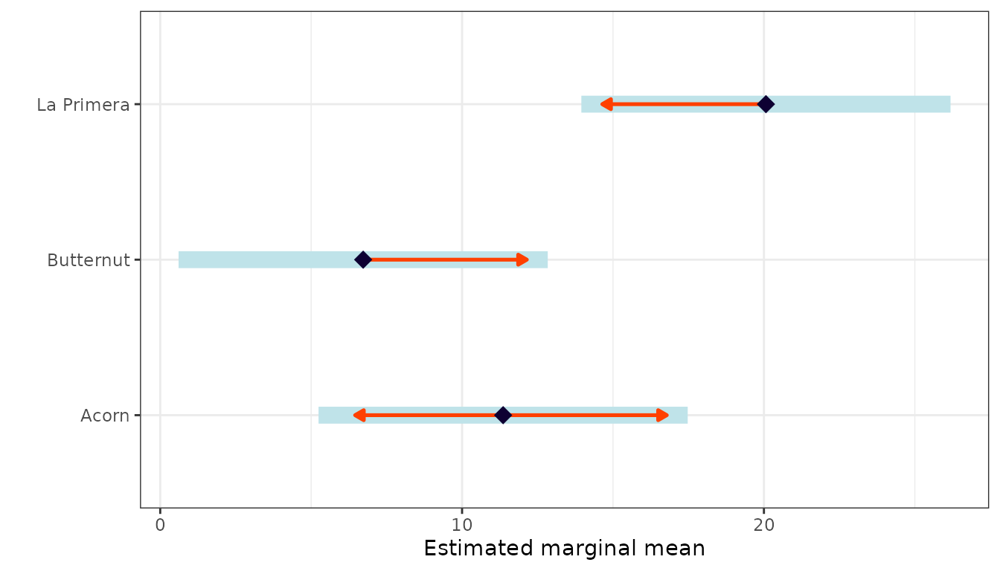

When to Use
The Completely Randomized Design (CRD) is the simplest experimental design. Use it when:
- There is one treatment factor with two or more levels.
- Experimental units are homogeneous (no known sources of variability to block).
- Treatments are randomly assigned to units without restriction.
CRD is common in laboratory experiments and greenhouse trials where environmental conditions are uniform.
The Design
In a CRD, each treatment is assigned to experimental units purely at random. The statistical model is:
where is the overall mean, is the effect of treatment , and .
Data
We use a dataset comparing the yield of three squash varieties (Acorn, Butternut, Spaghetti) with three replicates each.
library(agrideshr)
data(crd_data)
str(crd_data)
#> Classes 'tbl_df', 'tbl' and 'data.frame': 9 obs. of 3 variables:
#> $ Variety : Factor w/ 3 levels "Acorn","Butternut",..: 3 3 3 2 2 2 1 1 1
#> $ Replicate: Factor w/ 3 levels "rep1","rep2",..: 1 2 3 1 2 3 1 2 3
#> $ Yield : num 21.1 17.9 21.2 4.42 2.95 12.8 15.2 5.78 13.1
crd_data
#> Variety Replicate Yield
#> 1 La Primera rep1 21.10
#> 2 La Primera rep2 17.90
#> 3 La Primera rep3 21.20
#> 4 Butternut rep1 4.42
#> 5 Butternut rep2 2.95
#> 6 Butternut rep3 12.80
#> 7 Acorn rep1 15.20
#> 8 Acorn rep2 5.78
#> 9 Acorn rep3 13.10Exploratory Visualization
library(ggplot2)
ggplot(crd_data, aes(x = Variety, y = Yield, fill = Variety)) +
geom_boxplot(alpha = 0.7, outlier.shape = 16) +
geom_jitter(width = 0.1, size = 2) +
theme_bw() +
labs(title = "Yield by Squash Variety", y = "Yield", x = "Variety") +
theme(legend.position = "none")
Descriptive statistics by variety:
Model Fitting
We fit a one-way ANOVA using aov():
mod <- aov(Yield ~ Variety, data = crd_data)
summary(mod)
#> Df Sum Sq Mean Sq F value Pr(>F)
#> Variety 2 275.4 137.67 7.348 0.0244 *
#> Residuals 6 112.4 18.74
#> ---
#> Signif. codes: 0 '***' 0.001 '**' 0.01 '*' 0.05 '.' 0.1 ' ' 1The F-test assesses whether at least one variety mean differs from the others.
Assumption Checking
ANOVA assumes that residuals are normally distributed and that variances are homogeneous across groups.
check_assumptions(mod, data = crd_data, group = "Variety")
We can also check normality per group:
crd_data %>%
group_by(Variety) %>%
summarise(
Shapiro_p = shapiro.test(Yield)$p.value,
.groups = "drop"
)
#> # A tibble: 3 × 2
#> Variety Shapiro_p
#> <fct> <dbl>
#> 1 Acorn 0.409
#> 2 Butternut 0.265
#> 3 La Primera 0.0509Post-hoc Comparisons
If the F-test is significant, we compare varieties pairwise using Tukey’s HSD:
TukeyHSD(mod)
#> Tukey multiple comparisons of means
#> 95% family-wise confidence level
#>
#> Fit: aov(formula = Yield ~ Variety, data = crd_data)
#>
#> $Variety
#> diff lwr upr p adj
#> Butternut-Acorn -4.636667 -15.481064 6.207731 0.4396163
#> La Primera-Acorn 8.706667 -2.137731 19.551064 0.1069483
#> La Primera-Butternut 13.343333 2.498936 24.187731 0.0215689
Estimated Marginal Means
The emmeans package provides estimated marginal means
and pairwise contrasts:
library(emmeans)
emm <- emmeans(mod, specs = "Variety")
emm
#> Variety emmean SE df lower.CL upper.CL
#> Acorn 11.36 2.5 6 5.245 17.5
#> Butternut 6.72 2.5 6 0.608 12.8
#> La Primera 20.07 2.5 6 13.951 26.2
#>
#> Confidence level used: 0.95
pairs(emm)
#> contrast estimate SE df t.ratio p.value
#> Acorn - Butternut 4.64 3.53 6 1.312 0.4396
#> Acorn - La Primera -8.71 3.53 6 -2.463 0.1069
#> Butternut - La Primera -13.34 3.53 6 -3.775 0.0216
#>
#> P value adjustment: tukey method for comparing a family of 3 estimates
Conclusion
The CRD analysis provides a straightforward way to compare treatment means when experimental units are homogeneous. The key outputs are:
- F-test from the ANOVA table to detect overall differences.
- Diagnostic plots to verify model assumptions.
- Tukey HSD or emmeans contrasts for pairwise comparisons.
When experimental units are not homogeneous, consider using a Randomized Complete Block Design instead.